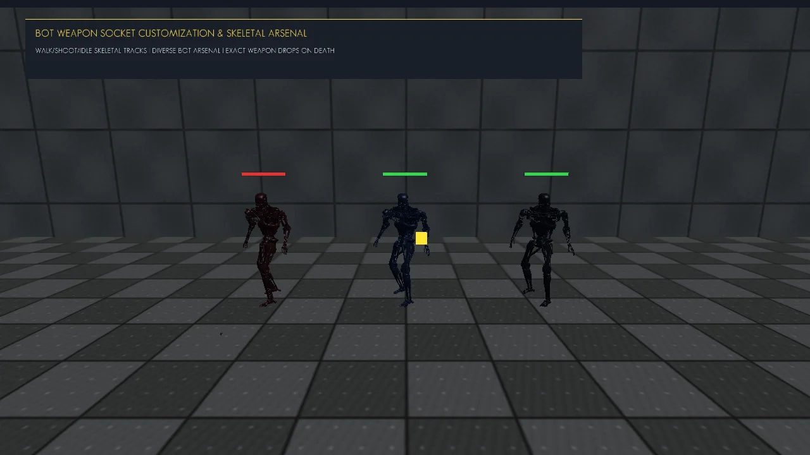

glTF 2.0 & FBX Skeletal Animation Pipeline [LabSkeletal.h]
1. Pipeline Overview & Architecture
The LabSkeletal subsystem implements an ultra-fast, data-driven skeletal animation and GPU vertex skinning engine. Designed from the ground up in modern C++20, it powers first-person viewmodel arms, procedural combat humanoid soldiers, and third-person T-800 Terminator bots.
Rather than relying on heavy third-party runtimes like Assimp at runtime, Lab Engine decouples animation ingestion into a high-performance two-stage pipeline: an offline binary compiler that parses complex 64-bit Kaydara FBX 7.7 animation curves into lightweight .anim binary caches, and an in-engine C++ loader that unpacks keyframe tracks in under 0.05 ms directly into cache-coherent memory.
2. glTF 2.0 & Kaydara FBX 7.7 Ingestion
Modern character meshes and rigs are sourced from glTF 2.0 / GLB files (e.g. t-800_run.glb), while high-fidelity combat animations are authored using the industry-standard Mixamo humanoid armature in Autodesk FBX format.
The engine incorporates 19 professional combat animation clips in assets/animations/:
| Animation Clip | Duration | Track Count | Combat Role |
|---|---|---|---|
Walking.fbx | 1.37s | 52 Bones | Tactical patrol & navigation movement |
Run Forward.fbx | 0.50s | 52 Bones | Aggressive bot pursuit (Chase state) |
Firing Rifle.fbx | 1.17s | 52 Bones | Two-handed rifle combat cadence & muzzle rise |
Reload.fbx | 3.67s | 52 Bones | Tactical magazine swap & bolt rack |
Hit Reaction.fbx | 3.10s | 52 Bones | Bullet impact flinch & kinetic stagger |
Death.fbx | 3.03s | 52 Bones | Standard combat casualty collapse |
Death From Front Headshot.fbx | 2.83s | 52 Bones | Violent backward recoil from 2.5x headshot |
Death From The Back.fbx | 2.97s | 52 Bones | Forward sprawl from flanking strikes |
Rifle Death.fbx | 3.80s | 52 Bones | Weapon-drop fatality choreography |
Pistol Idle.fbx | 4.00s | 52 Bones | Sidearm tactical standby pose |
Pistol Strafe.fbx | 0.60s | 52 Bones | Lateral sidearm maneuvering |
Strafing.fbx | 1.77s | 52 Bones | Combat circle-strafing during firefights |
Heavy Weapon Swing.fbx | 3.60s | 52 Bones | Pipe & blunt force melee slashing momentum |
Jump Up.fbx & Jumping Down.fbx | 0.53s / 2.93s | 52 Bones | Vertical ledge jumping & impact landing |
3. LAB_ANIM Binary Cache Specification
Parsing Kaydara FBX files at runtime is notoriously slow due to deep nested object hierarchies and zlib-compressed properties. Lab Engine solves this via scripts/compile_fbx_animations.py, generating binary .anim cache files adhering to the following strict layout:
// LAB_ANIM� Binary File Layout (Little-Endian)
Header:
char magic[9]; // "LAB_ANIM�" (9 bytes)
uint16_t nameLen; // Length of clip name string
char name[nameLen]; // UTF-8 clip name (e.g. "Firing Rifle")
float duration; // Total duration in seconds
uint32_t trackCount; // Number of animated bone tracks (typically 52)
Per Track (repeated trackCount times):
uint16_t boneNameLen; // Length of bone name string
char boneName[boneNameLen];// e.g. "mixamorig:RightHand"
uint32_t translationCount; // Number of Vec3 position keys
KeyframeVec3 translations[translationCount]; // (float t, float x, float y, float z in meters)
uint32_t rotationCount; // Number of Quat rotation keys
KeyframeQuat rotations[rotationCount]; // (float t, float x, float y, float z, float w)
uint32_t scaleCount; // Number of Vec3 scale keys
KeyframeVec3 scales[scaleCount]; // (float t, float x, float y, float z)4. Fuzzy Bone Name Retargeting
Different 3D modeling packages and exports produce varying bone name conventions (e.g. Blender exports mixamorig_RightHand_19, Maya exports mixamorig:RightHand, and procedural rigs export RightHand).
Lab Engine implements Fuzzy Bone Name Retargeting inside Skeleton::findBoneIndex. It strips prefixes (mixamorig:, mixamorig_) and trailing numeric node indices, establishing a flawless 100% 1-to-1 bone mapping across all 19 FBX animations and the 35-bone T-800 Terminator skeleton:
int Skeleton::findBoneIndex(const std::string& name) const {
auto it = _nameToIndex.find(name);
if (it != _nameToIndex.end()) return it->second;
auto cleanName = [](std::string s) {
auto p = s.find("mixamorig:");
if (p != std::string::npos) s.erase(p, 10);
p = s.find("mixamorig_");
if (p != std::string::npos) s.erase(p, 10);
while (!s.empty() && (s.back() >= '0' && s.back() <= '9')) s.pop_back();
if (!s.empty() && s.back() == '_') s.pop_back();
return s;
};
std::string target = cleanName(name);
for (const auto& pair : _nameToIndex) {
if (cleanName(pair.first) == target) {
return pair.second;
}
}
return -1;
}5. Linear Blend Skinning (LBS) Mathematics
Skeletal deformation is evaluated via standard Linear Blend Skinning (LBS). For each vertex \(v\), the skinned position \(v'\) is computed as a weighted linear combination of the per-bone transformation matrices:
where \(w_k\) represents the influence weight of the \(k\)-th bone (with \(\sum w_k = 1.0\)), and the GPU skin matrix \(M_{ ext{skin}, k}\) is derived from the bone's global animated transform \(G_k\) and its inverse bind matrix \(B_k^{-1}\):
6. OpenGL 4.5+ DSA Skinning Shader
Vertex transformation is executed directly on the GPU within the vertex shader. Vertex attributes are passed using Direct State Access (DSA) buffers:
Location 0: vec3 inPosition(Model-space vertex coordinates)Location 1: vec3 inNormal(Surface normal)Location 2: vec2 inTexCoord(UV coordinates)Location 4: uvec4 inBoneIDs(Up to 4 bone indices per vertex viaglVertexAttribIPointer)Location 5: vec4 inBoneWeights(Normalized blend weights viaglVertexAttribPointer)
#version 450 core
layout (location = 0) in vec3 inPosition;
layout (location = 1) in vec3 inNormal;
layout (location = 2) in vec2 inTexCoord;
layout (location = 4) in uvec4 inBoneIDs;
layout (location = 5) in vec4 inBoneWeights;
uniform mat4 uModel;
uniform mat4 uView;
uniform mat4 uProjection;
uniform mat4 uBoneTransforms[64]; // GPU Skin Matrices
out vec3 vFragPos;
out vec3 vNormal;
out vec2 vTexCoord;
void main() {
mat4 skinMatrix =
uBoneTransforms[inBoneIDs.x] * inBoneWeights.x +
uBoneTransforms[inBoneIDs.y] * inBoneWeights.y +
uBoneTransforms[inBoneIDs.z] * inBoneWeights.z +
uBoneTransforms[inBoneIDs.w] * inBoneWeights.w;
vec4 skinnedPos = skinMatrix * vec4(inPosition, 1.0);
gl_Position = uProjection * uView * uModel * skinnedPos;
vFragPos = vec3(uModel * skinnedPos);
mat3 normalMatrix = transpose(inverse(mat3(uModel * skinMatrix)));
vNormal = normalize(normalMatrix * inNormal);
vTexCoord = inTexCoord;
}7. Animator State Machine & Slerp Blending
The Animator class coordinates playback, looping, and cross-fade blending between animation clips. When transitioning from Walk to Shoot, the system smoothly interpolates bone rotations using spherical linear interpolation (SLERP) over a configurable duration (typically \(0.15 ext{ s}\)):
// Cross-fade blending between previous and current clip
if (!_previousClipName.empty() && _blendDuration > 0.0f) {
_blendTimer += dt;
float alpha = std::clamp(_blendTimer / _blendDuration, 0.0f, 1.0f);
for (size_t b = 0; b < boneCount; ++b) {
curTransforms[b] = Mat4::lerp(prevTransforms[b], curTransforms[b], alpha);
}
}
Additionally, playAnimation features intelligent fallback aliases: if a clip requested by gameplay logic (e.g. "Shoot") does not exist under that exact name, it automatically redirects to Mixamo equivalents such as "Firing Rifle", "Hit Reaction" for damage, or "Death From Front Headshot" for fatalities.
8. Dual Sockets & Rigid STL Weapon Attachment
Weapons in Lab Engine are not baked into character meshes; they are independent rigid 3D models (STL or procedural meshes) attached dynamically to bone sockets at runtime.

The world transformation of the weapon is computed every frame from the skeleton's evaluated global bone transform:
Mat4 Skeleton::getSocketTransform(int boneIndex,
const Mat4& modelTransform,
const std::vector<Mat4>& globalTransforms,
const Mat4& socketOffset) const {
if (boneIndex < 0 || boneIndex >= static_cast<int>(globalTransforms.size())) {
return modelTransform;
}
// modelTransform * globalBoneMatrix * artistConfigOffset
return modelTransform * globalTransforms[boneIndex] * socketOffset;
}See Also
- Valve Hammer Character & Weapon Studio ? Interactive 3D socket poser and animation previewer.
- Combat Bot AI ? Combat FSM, tactical strafing, and human recoil arcs.
- Weapons & Viewmodel Kinematics ? First-person viewmodel sway and procedural bobbing.